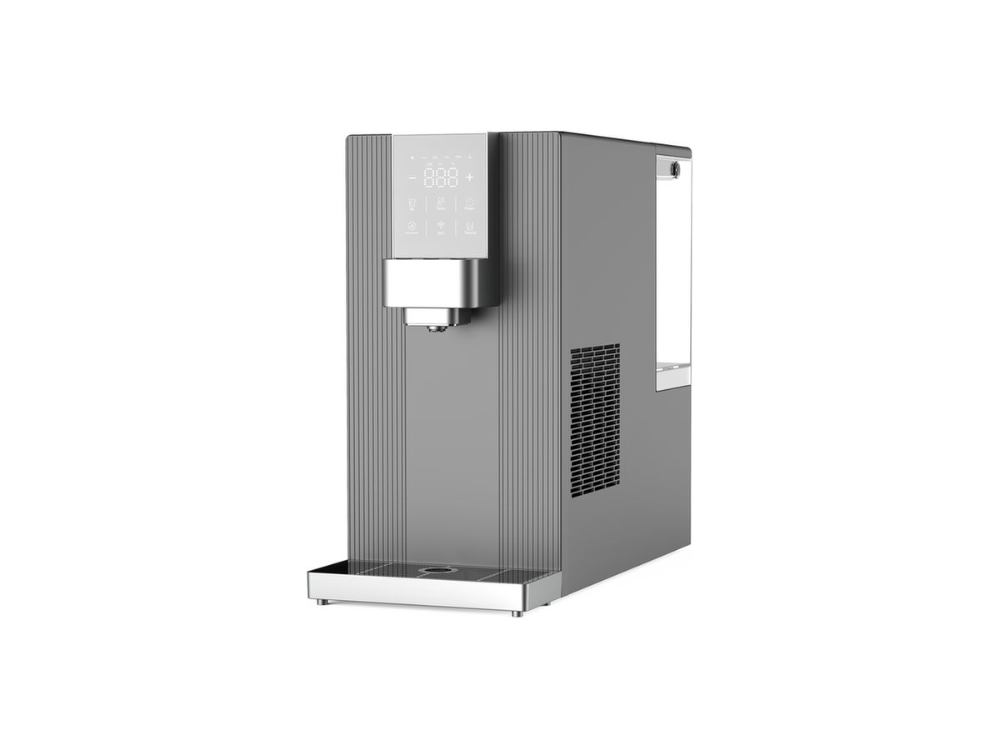
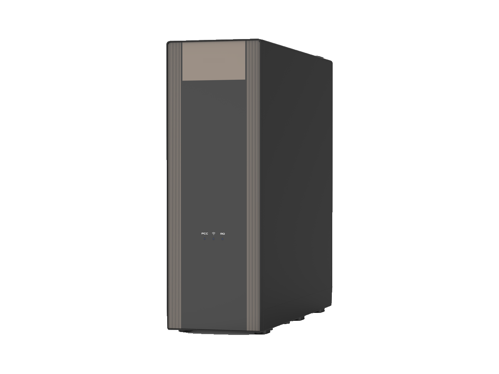

台式净水器
台式净水器RP-C07
带加热壶的 RO 净水器
SKU: RP-C07
起订量：询价时确认

台式净水系统
气泡水系列 (W61) — 八种变体。RP-C14（W61）为本系列主推款。
RP-C14、RP-C05 与 W62 配色为气泡水系列八种变体中的三种。本系列还包括 W64 配色——与 RP-C14（W61）为同一型号，仅面板不同——以及另外四种气泡水变体（W65、W68、W69 与 D1），规格按订单确认。
以下三种有图变体共用下表规格值，仅屏幕与面板不同：RP-C14（W61）为小 LED 触控屏 + 深灰竖条纹面板；RP-C05（W60）为 7 英寸全彩触摸屏 + 深色拉丝金属面板；RP-C14（W62）与 RP-C14（W61）为同一型号，仅面板为黑金竖条纹。
规格按型号及订单确认。
下表为已确认规格，适用于 RP-C14、RP-C05、W62 变体与 W64 配色。
八种变体 — 亦可按 RP-C05（气泡水，触摸屏） 报价。
电压／频率可按目标国家配置，其他配置按订单确认。
将鼠标悬停在款式图片上查看对应参数。触屏设备请点按图片。


各变体完整规格并列对照，下方规格表为同一组数值。
| 规格 | RP-C14-1 — 气泡水 (W61) | RP-C14-2 — 气泡水 (W60) | RP-C14-3 — 气泡水，黑金配色 (W62) | RP-C14-4 — 气泡水 (W64) | RP-C14-5 — 气泡水 (W65) | RP-C14-6 — 气泡水 (W68) | RP-C14-7 — 气泡水 (W69) | RP-C14-8 — 气泡水 (D1) |
|---|---|---|---|---|---|---|---|---|
| 显示屏 | 小 LED 触控屏 | 7 英寸全彩触摸屏 | 小 LED 触控屏 | 小 LED 触控屏 | 按订单确认 | 按订单确认 | 按订单确认 | 按订单确认 |
| 面板 | 深灰竖条纹面板 | 深色拉丝金属面板 | 黑金竖条纹面板 | 面板配色按订单确认 | 按订单确认 | 按订单确认 | 按订单确认 | 按订单确认 |
| 净水流量 | 520 mL/min | 520 mL/min | 520 mL/min | 520 mL/min | 按订单确认 | 按订单确认 | 按订单确认 | 按订单确认 |
| 额定净水量 | 4000 L | 4000 L | 4000 L | 4000 L | 按订单确认 | 按订单确认 | 按订单确认 | 按订单确认 |
| 过滤方式 | PAC + RO + CF | PAC + RO + CF | PAC + RO + CF | PAC + RO + CF | RO（系列配置） | RO（系列配置） | RO（系列配置） | RO（系列配置） |
| 制冷方式 | 压缩机制冷；3.0 L/h | 压缩机制冷；3.0 L/h | 压缩机制冷；3.0 L/h | 压缩机制冷；3.0 L/h | 压缩机制冷；4 °C 冰水（系列配置） | 压缩机制冷；4 °C 冰水（系列配置） | 压缩机制冷；4 °C 冰水（系列配置） | 压缩机制冷；4 °C 冰水（系列配置） |
| 加热能力 | 18 L/h | 18 L/h | 18 L/h | 18 L/h | 3 秒速热（系列配置） | 3 秒速热（系列配置） | 3 秒速热（系列配置） | 3 秒速热（系列配置） |
| 制热功率 | 2270 W | 2270 W | 2270 W | 2270 W | 按订单确认 | 按订单确认 | 按订单确认 | 按订单确认 |
| 纳米气泡水 | 800 mL | 800 mL | 800 mL | 800 mL | SUPERMIX 气液混合技术（系列配置） | SUPERMIX 气液混合技术（系列配置） | SUPERMIX 气液混合技术（系列配置） | SUPERMIX 气液混合技术（系列配置） |
| 尺寸 | 467 × 220 × 430 mm | 467 × 220 × 430 mm | 467 × 220 × 430 mm | 467 × 220 × 430 mm | 按订单确认 | 按订单确认 | 按订单确认 | 按订单确认 |
| 电压／频率 | 按目标国家配置 | 按目标国家配置 | 按目标国家配置 | 按目标国家配置 | 按目标国家配置 | 按目标国家配置 | 按目标国家配置 | 按目标国家配置 |
W62 配色为 RP-C14 的颜色款 — 与 RP-C14（W61）为同一型号、规格相同，仅面板配色不同。
W64 配色与 RP-C14（W61）为同一型号，仅面板不同，共用上表 RP-C14（W61）规格值。W65、W68、W69 与 D1 气泡水变体共用系列配置（SUPERMIX 气液混合技术、RO 过滤、压缩机制冷与 4 °C 冰水、UVC 杀菌、3 秒速热、大水箱），其余数值按订单确认。W65、W68、W69、D1 与 W64 暂无产品图——系列总览页展示了全系列，未标注各型号对应机身。
W61 产品视频。
W60 产品视频。
ROPureOEM 目录中的 9 行规格，适用于 RP-C14、RP-C05、W62 变体与 W64 配色。
| 净水流量 | 520 mL/min |
|---|---|
| 额定净水量 | 4000 L |
| 过滤方式 | PAC + RO + CF |
| 制冷方式 | 压缩机制冷；3.0 L/h |
| 加热能力 | 18 L/h |
| 制热功率 | 2270 W |
| 纳米气泡水 | 800 mL |
| 尺寸 | 467 × 220 × 430 mm |
| 电压／频率 | 按目标国家配置 |
规格来源于 ROPureOEM 目录。尚未确认的数值标注为“按订单确认”，不发布未经确认的参数。